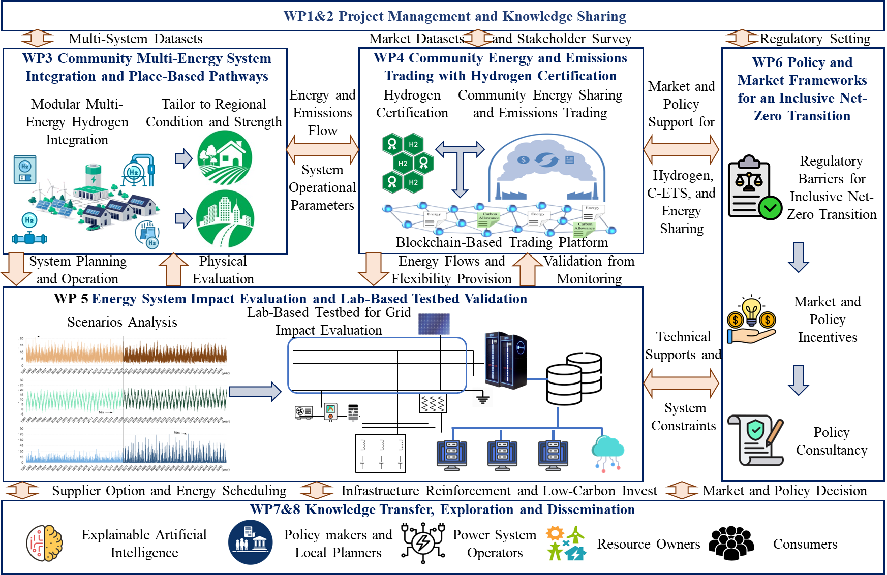

Community Hydrogen, Emissions Trading, and Renewable Energy for Inclusive Net-Zero Transition.
A 4-year Horizon Europe MSCA SE project integrating hydrogen, advanced AI,community energy trading, and inclusive policy frameworks for zero-inertia, 100% renewable energy systems.
COHERENT combines engineering, social science, policy analysis, and digital
technologies so that clean-energy innovation can be tested, trusted, and reused.
01
Multi-energy modelling
Develop whole-system models that integrate hydrogen flows, storage, and
conversion with community electricity, heating, transport, and socio-economic
conditions. The modelling framework combines local demand, weather, network,
technology-uptake, and community data with optimisation, power-flow analysis,
and thermal modelling, so local net-zero pathways can be tested against
infrastructure constraints, uncertainty, flexibility needs, investment decisions,
and place-based transition scenarios.
02
Community markets
Design hydrogen-integrated community energy sharing and emissions trading
mechanisms that connect households, prosumers, local businesses, authorities,
grid operators, and hydrogen assets. The market method co-simulates community
energy dynamics with policy incentives, carbon pricing, settlement rules,
hydrogen certification, and fairness indicators, so participation, lower costs,
emissions reduction, and investment signals can be assessed across different
stakeholder groups.
03
Testbed validation
Validate operational feasibility for future zero-inertia, 100% renewable
systems by linking operating scenarios with physical devices, RTDS platforms,
and AI control methods. Laboratory work examines electrolysers, storage, fuel
cells, heat pumps, power electronics, controllers, and monitoring dashboards,
producing evidence for ancillary services, flexibility, performance validation,
controller tuning, model calibration, safe operation, and deployment readiness.
04
Inclusive policy and XAI
Build transparent decision support that turns modelling results, socio-economic
indicators, affordability evidence, carbon and resilience metrics, and stakeholder
priorities into policy-relevant recommendations. Explainable AI methods such as
LIME and SHAP, visual dashboards, stakeholder workshops, and Community Advisory
Panels help policymakers, operators, and citizens understand model logic, compare
policy scenarios, identify community vulnerability, and support trusted, inclusive
participation in local net-zero transitions.
Work plan
Eight work packages across 48 months

WP1
Project Management and Knowledge Sharing
M1-M48, led by UoB
WP2
Preliminary Research
M1-M5, led by UoB
WP3
Community Multi-Energy System Integration
M6-M24, led by UNIPD
WP4
Community Energy and Emissions Trading
M6-M32, led by CU
WP5
Impact Evaluation and Lab-Based Validation
M18-M40, led by UDUR
WP6
Inclusive Policy and Market Frameworks
M33-M48, led by T4S
WP7
Knowledge Transfer and Capacity Building
M1-M48, led by UoB
WP8
Exploitation and Dissemination
M1-M48, led by UoB
Click a partner marker on the map to jump to its COHERENT profile.
Consortium
A cross-sector partnership in Europe and beyond
The consortium brings together universities, SMEs, technology partners, and
international associated partners across energy systems, hydrogen, AI, blockchain,
policy, social innovation, and community engagement.
Beneficiaries
Associated partners
Staff exchanges
Mobility as the engine of collaboration
COHERENT will fund 186 secondment months, supporting interdisciplinary training,
co-supervision, lab validation, community engagement, and durable collaboration
between academic and non-academic partners.
103months in period 1
83months in period 2
11funded beneficiaries
4global associated partners
People
Researchers by partner institution
Named researchers and project teams listed in the COHERENT proposal, grouped by
partner institution and disciplinary contribution.
Outputs
Deliverables, tools, workshops, and evidence
Public deliverables
Stakeholder framework and engagement strategies
Data inventory and analytical framework
Guidance for fair participation in C-ETS and energy sharing
Policy evidence on community energy, hydrogen, and inclusive net-zero
Digital and testbed results
Blockchain-based community energy trading prototype
Simulation platform for community energy systems
Lab testbed configuration and real-world performance report
XAI tools for informed decision-making
Engagement and capacity building
Two education and awareness campaigns
Two participatory workshops
Open-science data practices and knowledge-sharing events
Exploitation and communication planning
News
Latest updates
COHERENT project launch
The project starts on 1 June 2026, opening a 48-month programme of staff
exchanges, research, training, and dissemination.
Kick-off meeting
Partners align on the work plan, management structure, secondments, data
practices, risk management, and stakeholder engagement.
Communication and dissemination plan
The first public communication plan will define target audiences, channels,
accessibility standards, and open-science routes.
Contact
Work with COHERENT
COHERENT welcomes engagement from energy communities, local authorities,
regulators, technology providers, SMEs, system operators, and civil-society
organisations interested in inclusive hydrogen-enabled energy transitions.
Project coordinationThe University of BirminghamBirmingham, United KingdomProject email to be published before launch